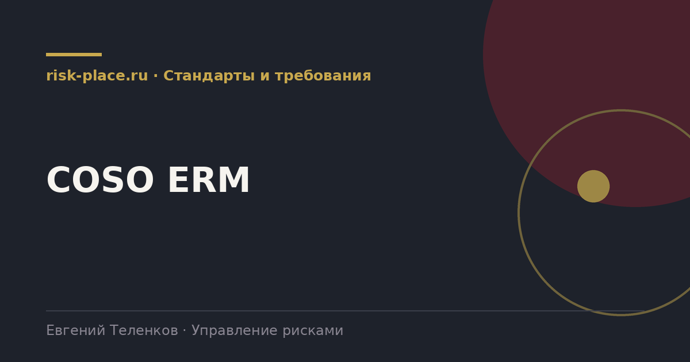

Главная · Библиотека · Стандарты и требования · COSO ERM
Библиотека · Стандарты и требования
Две мировые рамки управления рисками. Разбираем различия без идеологии, по практическим последствиям выбора.

COSO ERM это концептуальная модель управления рисками организации, разработанная американским Комитетом организаций-спонсоров Комиссии Тредвея. В действующей редакции модель называется «Управление рисками организации. Интеграция со стратегией и результативностью деятельности».
Модель выросла из другой известной работы того же комитета, посвященной внутреннему контролю, и это объясняет ее характер. COSO мыслит категориями контрольной среды и подотчетности, тогда как ИСО мыслит категориями процесса и контекста.
| Признак | COSO ERM | ГОСТ Р ИСО 31000 |
|---|---|---|
| Происхождение | США, среда финансовой отчетности и контроля | Международный стандарт, инженерная и управленческая традиция |
| Структура | Пять компонентов и двадцать принципов | Принципы, инфраструктура и процесс |
| Акцент | Связь со стратегией и результативностью, культура, подотчетность | Контекст, интеграция в деятельность, постоянное улучшение |
| Объем | Обширный документ с примерами | Около двадцати страниц |
| Признание в России | Используется, чаще в компаниях с иностранным участием | Принят как национальный стандарт, привычен аудиту |
| Сертификация | Не предусмотрена | Не предусмотрена |
Полезны как чек-лист, даже если компания работает по ИСО.
Практический ответ, ГОСТ Р ИСО 31000 как основу, COSO как источник идей. Причина прагматичная. Методология со ссылкой на национальный стандарт проходит проверку аудитора, регулятора и госзаказчика без дополнительных объяснений. Методология со ссылкой на американскую модель потребует перевода и защиты.
При этом две вещи из COSO стоит взять почти всегда. Первое, портфельный взгляд, то есть обязательство смотреть на совокупность рисков, а не только на отдельные. Второе, явную связку риск-аппетита со стратегией и с оценкой альтернатив при принятии решений. В тексте ИСО это подразумевается, но выражено гораздо мягче.
Частые вопросы
Одна форма для любого вопроса
Расскажем о ближайших датах, предложим формат под ваш состав участников и назовем порядок бюджета.
Предпочитаете почту — напишите на info@risk-place.ru. Адрес: Москва, улица Скаковая, 32с2.
 risk-
risk-